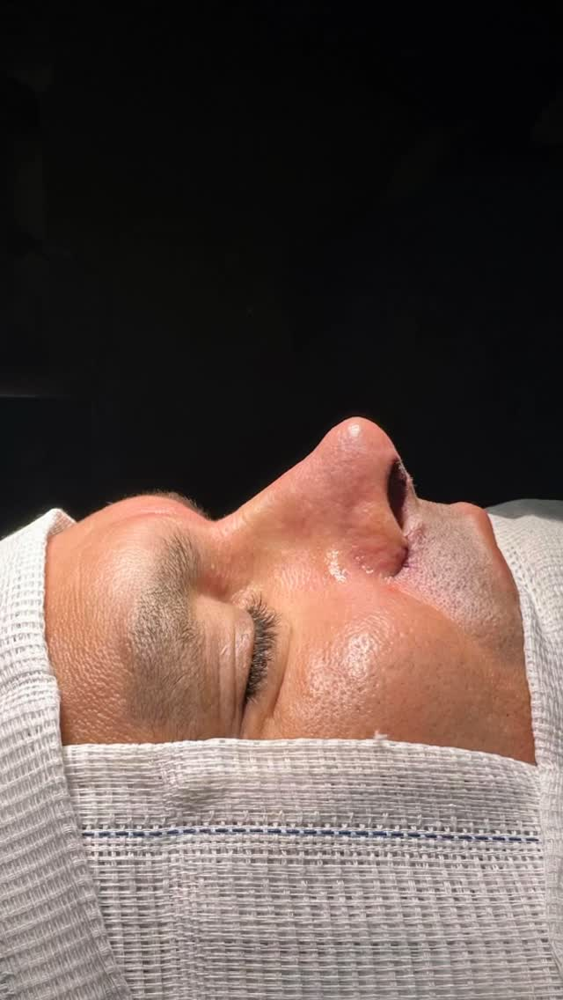
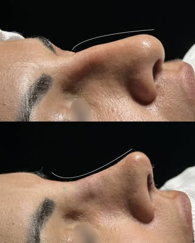
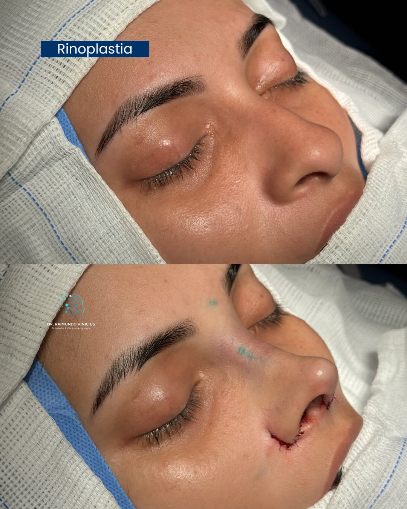
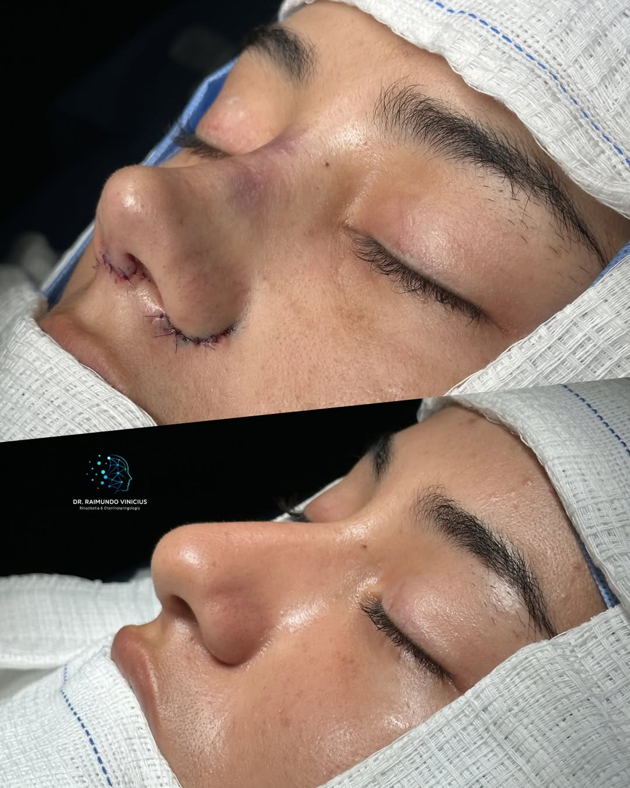

Rinoplastia
Correção estética e funcional do nariz, em busca de harmonia facial e, quando há indicação, de melhora respiratória. O planejamento parte da anatomia e da proporção do rosto de cada paciente.
Rinoplastia, Blefaroplastia e otorrino.
Otorrinolaringologista e cirurgião plástico facial, com nove anos de formação dedicados à face. Cada cirurgia é planejada com calma, técnica e uma conversa franca sobre o que é possível para o seu rosto.
Você fala direto com o consultório pelo WhatsApp
9 anos de formação dedicados à face.
Avaliação individualizada para pacientes de 16 a 75 anos, com foco em segurança e naturalidade.
CRM/RN 2271 RQE 2271 Titular ABCPF e ABORL-CCF
Dr. Raimundo Vinícius conduz, em Natal, atendimentos que reúnem duas formações que costumam caminhar separadas: a otorrinolaringologia e a cirurgia plástica facial. Na prática, isso significa que o nariz que incomoda diante do espelho e o nariz que atrapalha a respiração são avaliados pela mesma pessoa, no mesmo encontro.
Nove anos de formação em otorrinolaringologia sustentam cada avaliação. É esse repertório que permite ler a anatomia por trás do resultado desejado e planejar uma cirurgia que respeite estrutura, função e os traços de quem procura o consultório.
O compromisso é com resultados naturais: nenhum procedimento parte de um modelo pronto de rosto. O planejamento nasce da anatomia individual, das queixas relatadas e do que é tecnicamente seguro para cada paciente.

Três frentes de atuação, todas precedidas de avaliação presencial e indicação individual.
Correção estética e funcional do nariz, em busca de harmonia facial e, quando há indicação, de melhora respiratória. O planejamento parte da anatomia e da proporção do rosto de cada paciente.
Cirurgia das pálpebras, que renova o olhar sem apagar a expressão natural do rosto. A conduta considera o excesso de pele, a posição do olhar e o equilíbrio com os demais traços.
Diagnóstico e tratamento de questões respiratórias e nasais, do exame clínico ao encaminhamento cirúrgico, quando necessário.
Não sabe qual procedimento se aplica ao seu caso?
Agendar avaliaçãoO pós-operatório faz parte do tratamento. Cada retorno documenta a evolução e orienta os cuidados da fase seguinte.



Resultados variam conforme a anatomia individual. Fotos meramente ilustrativas até a substituição por casos reais autorizados.
Avaliações públicas deixadas por pacientes na ficha do consultório no Google.
Fiz minha rinoplastia com o Dr. Raimundo Vinicius em 2019 e tive uma ótima experiência. Desde a consulta até o pós-operatório, fui bem atendida e me senti segura em todo o processo. Resultado muito natural, exatamente como eu queria. Recomendo!
Dr. Raimundo Vinícius é um profissional maravilhoso, atencioso e que me passou segurança desde a 1ª consulta. Pesquisei bastante antes de me decidir, pois tinha pólipos, cistos no seios da face, desvio de septo bem tortuoso e há muito tempo respirava pela boca. […] Estou muito feliz com o resultado.
Excelente profissional! Tive uma ótima experiência com o Dr. Raimundo Vinícius. Profissional muito atencioso, explica tudo com clareza e demonstra grande conhecimento na área. O atendimento é humanizado, recomendo.
Avaliações publicadas por pacientes no Google. Ver todas na ficha do consultório
A queixa mais comum nos primeiros dias não é dor, e sim a sensação de nariz obstruído. O desconforto é controlado com a medicação prescrita no pós-operatório.
Inchaço e manchas roxas ao redor dos olhos são esperados e regridem aos poucos nas semanas seguintes. O repouso é relativo nos primeiros dias, e o retorno a cada atividade — trabalho, exercício, exposição ao sol — é liberado nos retornos, conforme a evolução de cada paciente.
O consultório atende avaliações de 16 a 75 anos. Abaixo dos 18, a cirurgia depende da autorização e do acompanhamento dos responsáveis.
Dentro dessa faixa, não é a idade que decide. O que define a indicação é a avaliação clínica, as condições de saúde e o quanto a estrutura do rosto já está formada.
Pode mudar. Quando a avaliação identifica algo que atrapalha a respiração — um desvio de septo, por exemplo — a correção funcional pode ser feita no mesmo tempo cirúrgico.
Quando não há indicação funcional, a cirurgia é estética, e o cuidado passa a ser preservar a respiração que já funciona. As duas frentes são avaliadas na mesma consulta.
A consulta começa pela queixa: o que incomoda diante do espelho e o que incomoda na hora de respirar. Depois vem o exame do nariz, por fora e por dentro, e a análise das proporções do rosto.
É a partir daí que se discute o que é tecnicamente possível no seu caso. Leve exames e relatórios anteriores, se tiver; exames complementares são pedidos quando há indicação.
A conversa começa por uma avaliação presencial, em que a queixa é examinada nas duas frentes — funcional e estética — antes de qualquer indicação.
CRM/RN 2271 RQE 2271 Titular ABCPF e ABORL-CCF
Telefone e WhatsApp